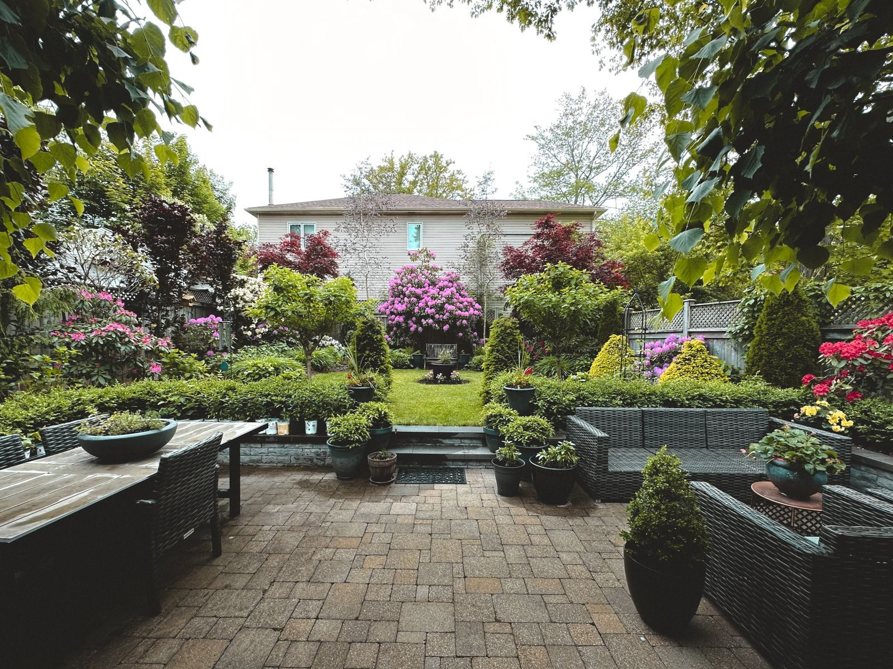
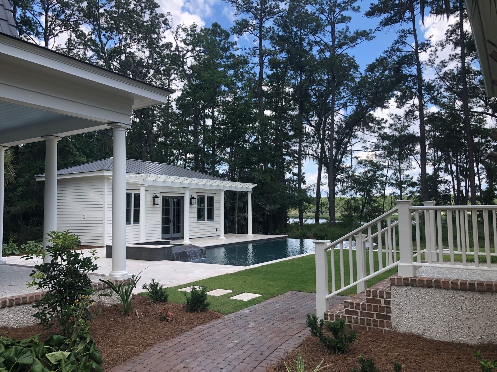
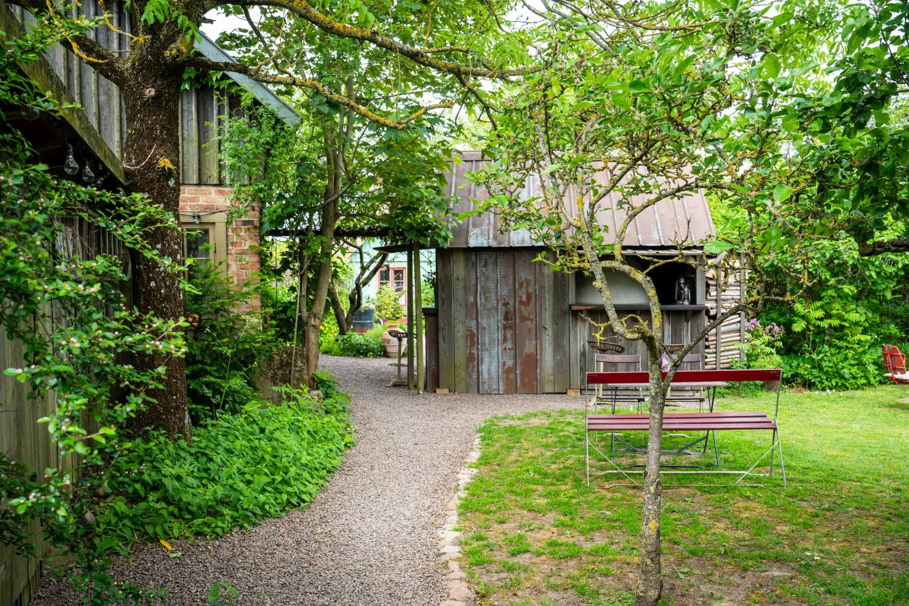
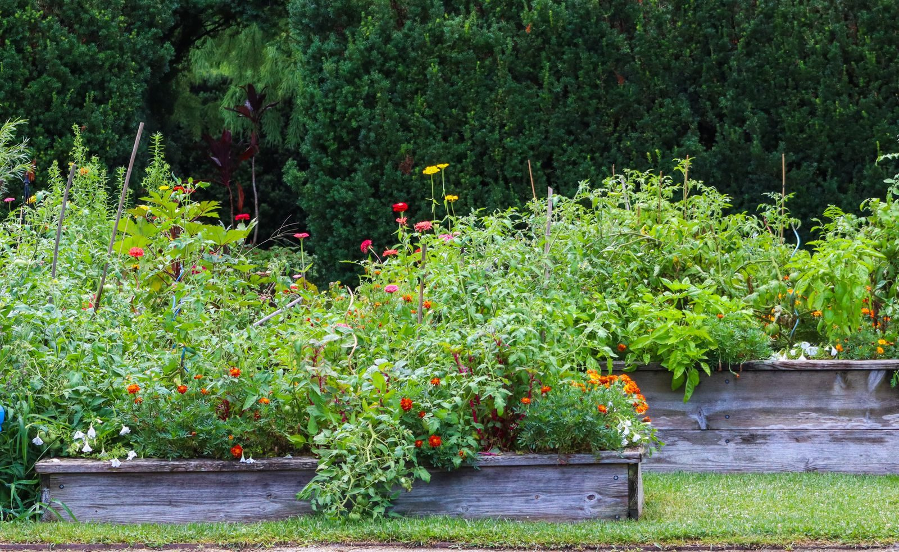
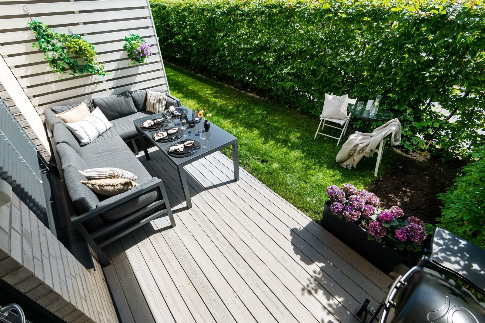
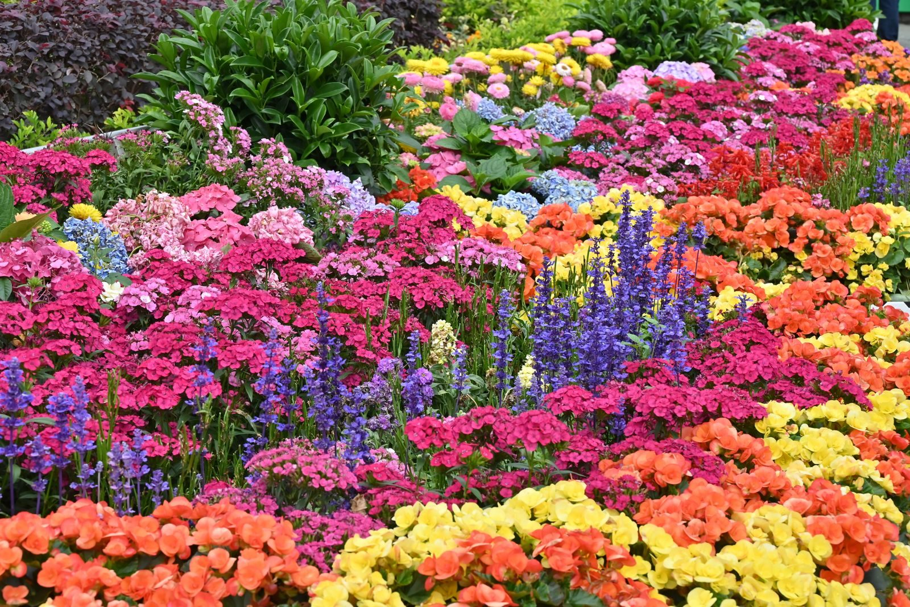

Quelques chantiers menés ces derniers mois, du petit jardin de ville au grand terrain.
Une cour sans vie transformée en jardin facile à vivre, avec une terrasse et des massifs persistants.

Plage en pierre naturelle, graminées et palmiers résistants au froid autour d'une piscine neuve.

Une allée en gravier stabilisé, bordée de lavandes, qui mène jusqu'à la porte.

Six carrés potagers surélevés, un petit verger et un récupérateur d'eau de pluie.

Une terrasse en pin traité, prolongée par une pergola et des plantes grimpantes.

Un massif qui fleurit de mars à octobre, sans arrosage une fois installé.